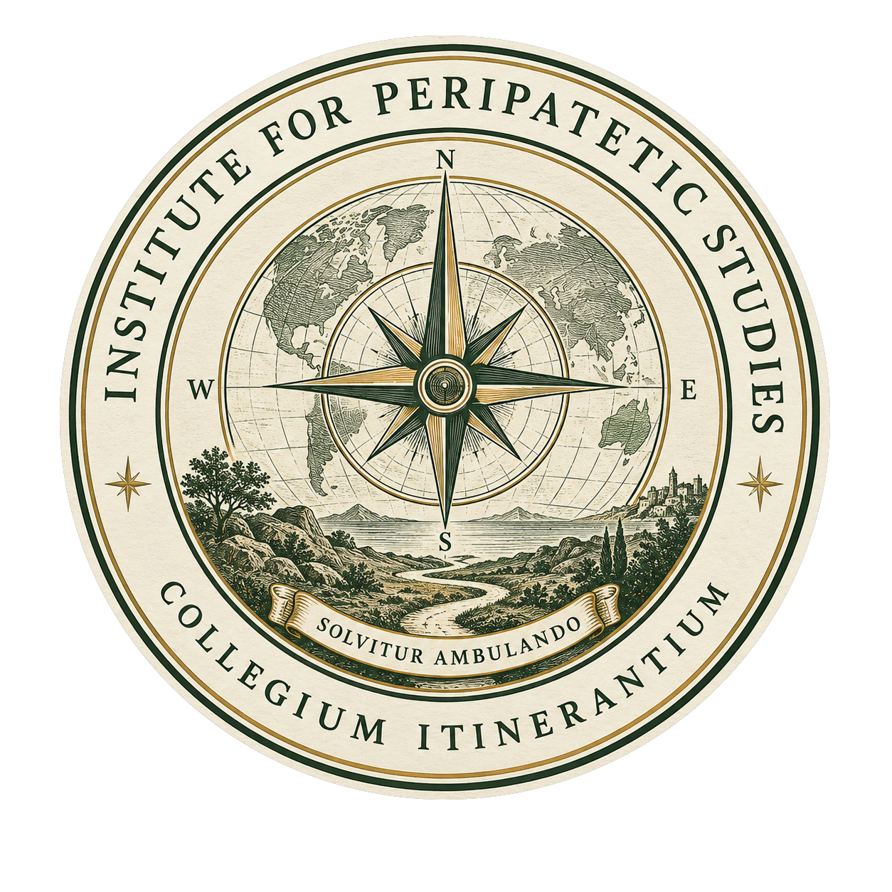

Constitutive Document
Founding Charter
of the Institute for Peripatetic Studies
Whereas the act of walking has long served as a means of philosophical inquiry, creative reflection, and direct engagement with the world; and whereas the study of places, landscapes, and journeys has traditionally been parceled among many disciplines without receiving the dedicated institutional attention it deserves; and whereas it has been judged necessary and appropriate to establish a formal institution devoted to these ends: be it therefore known that the following charter is hereby declared to be in effect.
Article I — Name and Identity
There is hereby established an independent institution of learning to be known as the Institute for Peripatetic Studies, bearing the ceremonial Latin designation Collegium Itinerantium — the College of Wanderers.
The Institute shall adopt as its motto Solvitur Ambulando — It is solved by walking — attributed to Saint Augustine and appropriated without apology by peripatetic inquirers ever since.
The Institute's seal shall depict a compass rose, a globe, and a winding path through a landscape toward a distant shore, representing the Institute's commitment to navigation, to the world as an object of study, and to the journey as a mode of inquiry.
Article II — Mission
The Institute is devoted to the advancement of Peripatetics: the interdisciplinary study of place through movement, combining geography, ecology, history, culture, observation, cartography, and conversation to understand landscapes as living systems.
The Institute recognizes that movement itself is a mode of knowing, and that direct engagement with places produces insights unavailable from any desk. It holds that the landscape encountered on foot is a different object of study than the landscape described in a text — more immediate, more insistent, and more honest about its own complexity.
Article III — Principles
- The Institute holds that not every journey requires a destination, nor every question a predetermined answer. The detour and the digression are legitimate scholarly activities.
- The Institute values observation, conversation, and sustained presence as legitimate and indispensable scholarly methods, complementary to but not reducible to library research.
- The Institute maintains that knowledge acquired through motion is not inferior to knowledge acquired through sedentary reflection. It is different, and frequently more interesting.
- The Institute affirms that walking remains, as it has always been, among the most serious activities a person can undertake, and that this seriousness is in no way diminished by the pleasure it frequently provides.
- The Institute is explicitly skeptical of the assumption that purposeful movement must be efficient, goal-directed, or justifiable by its outputs. The unhurried return by a longer route is a scholarly act.
Article IV — Governance
The Institute is governed by its Founding Director, who holds full authority over its academic, administrative, and ceremonial affairs. The Founding Director serves at his own pleasure and for such duration as he finds the role worthwhile.
The Institute reserves the right to expand its governance structure when and if such expansion becomes warranted or entertaining. Until that time, a single director is considered sufficient for an institution of this character and scope.
Article V — Academic Distinctions
The Institute is hereby authorized to establish and confer ceremonial academic distinctions upon persons whom the Founding Director deems worthy of recognition. These distinctions are self-created, self-conferred, and entirely non-accredited by any external body. They are nonetheless earnestly meant and should be received in that spirit.
The founding distinctions are established as follows:
- Doctor of Peripatetic Studies (D.P.S.) — The highest distinction established by the Institute, awarded in recognition of foundational or exceptional contributions to peripatetic inquiry. Conferred upon the Founding Director at the establishment of the Institute.
- Licentiate of Peripatetic Studies (L.P.S.) — A lesser but respectable qualification, available to those who have engaged in meaningful peripatetic activity and stand ready to continue doing so. Conferred by diploma and letter of conferral through the Institute's diploma generator.
Further distinctions may be established at the discretion of the Founding Director as circumstances warrant.
Article VI — Declaration
The Institute exists on the conviction that institutions matter — that naming things, establishing formal structures, and committing principles to writing gives them a kind of reality and durability they would otherwise lack. The Institute for Peripatetic Studies is fictional in its authority and sincere in its purpose, and considers this an entirely tenable position.
Solvitur ambulando.